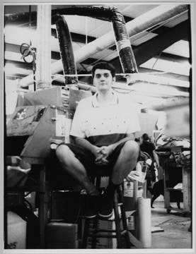

|
 |
"I think it keeps a lot of people sane." |
|
I am 24. I work at a T-shirt printing company in RTP called Body Billboards. I'm from
Cary originally. I graduated from Alfred University two years ago. I was a fine arts
major, so I'd like to say that I am an artist or aspiring to be an artist. That's not very
easy I guess. I do all kinds of different things. I majored in video and printmaking.
Printmaking helped me get this job. I do the physical, the labor work, the actual
printing.
I started exactly a year ago this summer. I live in Carrboro and we could pick it up there. I listened to it...half and half with XYC. I was involved in the college radio at school and I kind of missed it. I enjoyed it a lot up there. I was listening to the stations and they sort of started saying they were looking for new DJs at about the same time, and the XYC messages would say you have to be a UNC student and then WXDU said students and community members. so, not being a student, that was the only thing. [My old station] wasn't structured as well as XDU. Pretty much any one who came to the first couple of meetings got to be a DJ. They trained you on the spot, in 10-15 min each and you got a spot. If you were starting, if it was your first time, you probably got a really late night one...really early mornings or in the middle of the night. You didn't have to involved yourself in any other way. You started out pretty much just getting a show right off the bat, unless there were too many people applying. I started the second half of my freshman year and had a show every semester until I graduated. And I was on the production staff. You could just play whatever kind of music and they didn't really structure your show at all and there weren't any playlists. And I think as a result, not many people listened to the station, aside from the few DJs who really wanted it to be something else. We had NPR and that's sort of how we stayed on the air - someone was consistently listening to the station from 5-7 everyday. So nobody really hated us...At the time I think I was phasing over from heavy metal in my high school years to more industrial things to more alternative rock and stuff. And sort of techno or rpm music, what we call it here, eventually. It was kind of like I wanted to have something...In high school I didn't really have any extracurricular activities and it wasn't really pressure where I had to do something other than class or stuff...College is the whole sort of opening yourself up to new experiences kind of thing. I guess in a way it was partially listening to all kinds of new music and there were some people I probably wanted to get to know or hang out with or be cool around, so I think then being involved at the station already sort of led me to do that kind of thing. I and a couple of other people there, started to play around with actually how many pieces of equipment we had at the station and the whole mixing board as sort of a place to produce whole sort of soundtracks and soundscapes. So we did a couple of shows of that. That was what I enjoyed most up there, was doing all that production and mixing. I started here doing a regular playlist show last summer, 2-5 slot... I did a little bit of playing around between sort of playlist stuff on that show. It was in the middle of the night and I felt like it would be, you know, sort of okay to do a little different things. And then the following semester I applied for a specialty show doing mixing or audio collage. I think it's a little different from other specialty shows in that it’s not really all one, it’s not like a matter of defining the content or the subject matter. It's kind of the form or the way you present it, and that changes an awful lot...Part of the application to get the show was "How are you going to make it develop from week to week?"...It was a good idea I think to make it, the show, sort of cohesive...I guess for a jazz DJ, he would say "I’m gong to focus on this kind of jazz or have a theme each week." I tried to do a theme and started last semester that way where there would be sort of a subject theme each week and I would try to make the ingredients of the show what I would play sort of fit that category, in some ways. But I think it’s a lot harder to consistently do that with what I’m doing and recently I haven't really planned as much for the shows, just let them just develop and grow as I do it. So it is almost as much, sort of performing or doing the show as it was planning it out. I tend to play things in the rpm section that you would call ambient cause they mix well. A lot of avant-garde stuff, a little less genrefied stuff. Sound effects and film soundtracks. The one person I would do this with up at school, had started on his own and I and a couple other people heard it and listened to it every week. I think he was just the kind of person who needed...more information coming at him than other people and he just need lots of things going on all at once, so he would just play things all at the same time and he would mix another song in behind what he was playing at the time and he would have stuff going on all the CD players and all the record players to try to do something to it. And I found myself really interested in that. I would even go up to his shows and watch him do that. We started to help out and gradually started to do that with our own shows...The shows were always a mix of two or three people at a time...They were much more chaotic, well, obviously in that way there’s at least two people, three people, each of them putting people on and controlling the volume of it, editing it, or mixing it in and out. You had three or more different things all happening at once or all changing at once and it could get to be this kind of exchange or dialogue actually happening with the sound or with the music...It was a lot of trying to get your little bit heard over...It was actually pretty messy and chaotic at times. More often or not there would be a whole lot of noise and less interesting stuff and then moments would come up in the show...That was what I really missed when I came down here and couldn't do that at the radio station. I started the show here, hoping to get people interested to come up and do it with me. Even doing it on my own is great, but... it’s more of like me moving around through the sounds and stuff and less sort of exchange back and forth and sort of like dialogues or exchanges. |
[XDU] is much more interesting to listen to in the first place, cause, well for one thing,
almost all the time there will be something coming on eventually in each show that I
will have want to have heard to some degree. Up there, you turn the radio on and you
can tell in a few seconds if you're going to want to try again in a couple of minutes or
three hours. It's less sort of like, my personal stereo as to regular radio. I didn't listen to
the station much, as a DJ up there. Whereas here, when the station is on the air, I'm
always turning it on.
The way that XYC flows music too is different from us. They tend to mix it up a lot and not be as smooth a flow in the show. I think at XDU they try to emphasize a lot, "Play a variety of music but there's a way to do it gracefully," which I think is a good thing, to sort of not have this whiplash. One style of music here and then a totally different thing right after. It kind of throws you off for a second. I've heard them say that's a good thing. They like that sort of chunky cuts back and forth between styles. I guess its all radio aesthetic. I still listen to them, they're a better radio station than most others. It think XYC and XDU tend to be more knowledgeable than most college radio stations that I've heard. It even goes back to the aim of the station to educate and entertain. to sort of be that combination of things that people want to hear as well as information about that, or new things, new music you wouldn't have heard other places. And to keep it sort of fresh. I think XDU is actually a little bit more that way... not like trying harder to be like a source of music knowledge or musicology. XYC seems to ...fall into...every once in a while they'll feel sort of populist and they'll say, "let's play a disco song from the 70's or let’s play like a pop song, throw it in there real quick and remind people there's pop music too." It's kind of weird, a little schizophrenic. But I enjoy it anyway. College radio most times will tend to try to distance themselves in a way from a lot of the college people because they're sort of, not that they're ordinary folks and we're radio folks, but sort of, like, the people who are more interested in music and more curious and have more time to think about music and listen to and want to hear new things will either get involved in college radio or listen to it. To a lot of students, what G105 plays or any commercial station plays is fine for them... I'm thinking about this educate and entertain thing. They can be, I think they can be done together and interestingly a the same time. Its tricky. It's like, playing things that will draw the listener in and then playing something new that they haven't heard and maybe they'll like or maybe is related somehow. What is the radio station for? To be like a big music box that everybody can control or is it like an extracurricular activity where you go and learn about being a DJ and learn about new types of music and let some people who are interested in on the new things that you're hearing? or is it sort of a way to listen in on the sort of people who know a lot about music going on about what they are learning at the same time? I guess, I don't know, that seems to be the way the station is defined. I think if there were more students, more than half or a majority of them students, staffing the station or running the station, it definitely would be different. It would be a little bit more willing to follow the students in general, what they're wanting to hear, what the campus wants to hear. And less sort of detached from it. I'm not saying that we're not attached. Training is very extensive as far as I can see at XDU. They're a lot more concerned with the sound on the air, sort of getting it right and waiting to let the DJs go on the air till you think they’re concerned about how they sound, which is good. At XDU they want to have your skills down, like commercial stations, but just change all the content over. Not be the same, but different. The non-students will stay around and move in and out of positions, some stay with it for years and years, which is different from my experience. It's just a matter of being in an urban location, where there's just a potential for a lot more listeners. At first I would find out from staff meetings, occasionally, shows or seeing people here at the station, who, at least the staff members were. They'd get introduced to me, which I guess is good. I'm not sure it's more of a community than a circle of people at the radio station that intersect with people at the station and Duke, the students at the university, and then people at the station and living in Durham and people at the station who are living in the area altogether. I feel like sometimes there's a tendency to stay, to sort of hang out with each other and maybe not quite as much with people outside the station. I think it keeps a lot of people sane. When it's on the air, at full strength and everything, the people who want to turn on the radio and hear something different from commercial radio, can do that. If XDU wasn't here, there would still be XYC and KNC...but everybody wants a slightly different flavor of that too. And I think it does provide the community with that much bigger, wider variety of music, that you couldn’t get on the radio... It keeps people, it keeps me anyway, listening to the radio, because I’m involved with it and I know, I can hear what it would be if we didn't have XDU...Radio in general is sort of moving is towards automation and sending out from a central broadcasting center from computers to little stations all over the country the same stuff. XDU, and college radio stations in general, in some ways, keep at least the community, the college students here, sort of aware that college radio is still around and in a lot of ways better alternative to that. |